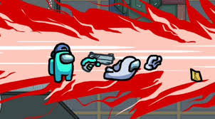

Hello World!
This is my new website and it's great.
My task is to become a hacker right now.Although Thomas was goofing around with my
code,I just corected it.
Hi again.Today I've played on a public server on Among us!I was kind of annoyed because I got killed and ejected sevral times!Oh yes,I forgot I'll
send you my link:WWHFWQ.
Oh. Hi everyone. Today(13.11.2020)Miss Pritchard and my dad had "parents evening".Miss Pritchard said I was good
in the term.My dad was so emotional when he heared the news he rewarded me with...Among Us! I was nervous when started because there might be imposters.

I went to an aqueduct in Pontcysyllte in Wales and walked on top of it. It was cool but some people thought it was scary (including my dad!).
We didn't just go over it, we also went under it. I also liked it because I was with my best friend. We saw a giant hand print on a rock made of lots of
different materials. We did a lot of exercise. I thought it was quite cool, and although it was high, I was not scared.
The aqueduct gave me an amazing idea. I think it'll be a cool one... an aqueduct in Minecraft! Yeah, it's lame but it is quite a cool challenge for me.
I think the aqueduct will be my best build ever. No build of mine will ever be better than this one because it'll rock.I just bet it will.I know it.

I enjoyed doing this website and learning all this code.It was a bit hard but I
thought about what I was doing and tried my best to get it right.
So now that I like coding,I think it's quite fun learning the divs styles bodys and
htmls.But this code was amazingly fun,exiting and teaches me a lot!This was the best
code I'v done in my life.
To ones who have a website, I will say "What did you put in your website?"and to ones
who don't "what would you put in yours?".Make creating a website your challenge.
I will write all the things that I am exited about here on the right--> My new play room
and a friend to come over to play and she is so exited to play in our play room.
We will play Minecraft together draw pictures and play LEGO.I will also teach her
how to make items with cemicals and show her what they do.
Click this for teleportation
I like my education edition thing because we can get cool items. I am super exited to teach
my friends the trick.They will love the ice bombs heat blocks super ferterlizer and a lot
more amazing stuff.Please say you like my website.If you do make pictures with words
that you think will describe my website well.The best description will get a treat.